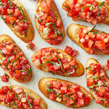

Bruschetta (pronouced brew-SKET-tah) is an Italian appetizer or antipasti that starts with a base of toasted or grilled bread. The bread is then served warm either with a topping spooned over or with a topping on the side so each person can build their own bruschetta. Bruschetta is meant to be served as a hand-held finger food, large enough for one or two bites.
You can top bruschetta with more than tomatoes, too. For example, try Strawberry Bruschetta and Peach Brulée Burrata Bruschetta for dessert-like versions.
- 1 loaf French bread, cut into 1/4-inch slices
- 1 tablespoon extra-virgin olive oil
- 8 roma (plum) tomatoes, diced
- ⅓ cup chopped fresh basil
- 1 ounce Parmesan cheese, freshly grated
- 2 cloves garlic, minced
- 1 tablespoon good quality balsamic vinegar
- 2 teaspoons extra-virgin olive oil
- ¼ teaspoon kosher salt
- ¼ teaspoon freshly ground black pepper
- Preheat oven to 400 degrees F (200 degrees C). Brush bread slices on both sides lightly with 1 tablespoon oil
and place on large baking sheet. Toast bread until golden, 5 to 10 minutes, turning halfway through.
- Meanwhile, toss together tomatoes, basil, Parmesan cheese, and garlic in a bowl. Mix in balsamic vinegar, 2
teaspoons olive oil, kosher salt, and pepper.
- Spoon tomato mixture onto toasted bread slices and serve immediately.